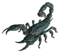
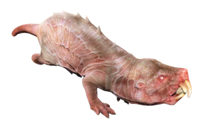
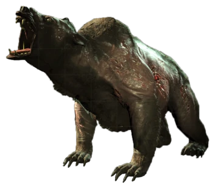
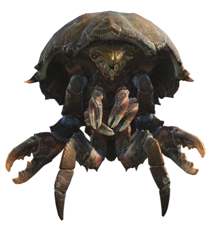
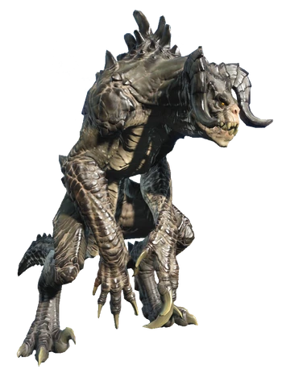
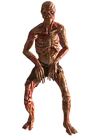
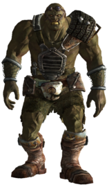

Welcome to the beastiary. This will help you identify the different types of creatures that you may encounter on your travels throughout the wasteland. With the knowledge gained here you may just live a little longer!
Creatures
Animals of all kinds were affected by the radiation of the bombs that were dropped. Things like scorpians, rats and even some sea life have mutated into some horrid creatures. These mutated creatures are even deadlier than before due to the changes.
Listed below are just some of the discovered creatures that you need to look out for on you adventures:
- Radscorpion
- Mole Rat
- Yao Guai
- Mirelurk
- Deathclaw

The Radscorpion was once a normal scorion until the the bombs dropped and the radiation mutated it in the the monstrosity that it is today. Be careful of its large stinger and its mighty claws. There are a few variations of the radscorpion and all are equally dangerous and should be avoided if possible.

The Mole Rat. These can burrow undergroun and catch travelers unaware. They may not be as large as some of the other creatures but are just as aggressive.

Yoa Guai, these guys may look nice and cuddly like the teddy bear you once had, but do not be mistaken. These mutated bears are extremely aggressive and will eat you for a snack. If you encounter one of these it is best to not disturb it. If you do disturb it run!

Mirelurks are just mutated crustaceans. Even though they may taste delicious and their eggs good for omlets, your best bet is to leave them alone due to their claws and hard shells that protect them.

AVOID AT ALL COST! These science experiments from before the war were ment to replace human troops but after the bombs dropped they mutated even more and are extremely aggressive. If you encounter one of these then good luck on surviving. Push down and use the slowest person with you as bait and you might possibly get away. If you can not run or avoid it then good luck to you, because you will most likely not make it home this time.
Humanoids
Some humans that were exposed to insane amounts of radiation have become mutated to the point that they barely resemble their old selves. Super mutants and ghouls were once human but the radiation from the bombs have mutated them to the point of madness and has give them a grotesque appearances.
There are other enemies in the wasteland that may resemble what used to be a human, but do not mistake them for humans.
- Ghouls
- Super Mutants

Ghouls are just humans who were exposed to massive amounts of radiation. Most have alost their minds and are feral. There are a small group of ghouls who have not lost their mind and gone feral. It is hard to determine which have lost their mind which ones haven't. So a good rule of thumb is, if it tries to kill you then kill it!

These also used to be human but have mutated to be much stronger and larger than humans. While they are somewhat intelligent, they are aggressive and believe themselves to be the superior humans. Avoid them if you can because they will kill you and or eat you.